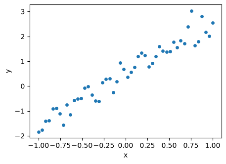
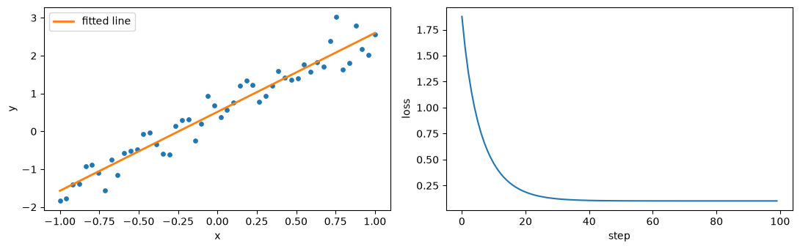

Tensors, autograd, layers and models in PyTorch, ending with training a small neural network on 2D points.
PyTorch Basics
PyTorch is the deep-learning library used in this course. This notebook covers its three main parts:
tensors: arrays that work much like NumPy arrays;
autograd: automatic computation of gradients;
torch.nn and torch.optim: the building blocks of neural networks and the optimizers that train them.
It ends by training a small neural network on 2D points. The PyTorch Training tutorial continues from there with datasets, mini-batches, evaluation and checkpoints on FashionMNIST.
Everything runs on a CPU in a few seconds.
Before you begin
Open this notebook in VS Code and select the cv Conda environment as the notebook kernel.
The notebook is designed to be run from top to bottom. If variables become inconsistent because cells were executed out of order, restart the kernel and use Run All.
import numpy as npimport matplotlib.pyplot as pltimport torchfrom torch import nntorch.manual_seed(0) # makes the random numbers below repeatableprint("PyTorch version:", torch.__version__)print("NumPy version:", np.__version__)
torch.from_numpy(a): a tensor that shares memory with the NumPy array a;
torch.tensor(a): a tensor with its own copy of the data;
t.numpy(): a NumPy array that shares memory with the tensor t.
a = np.array([1.0, 2.0, 3.0])shared = torch.from_numpy(a)copied = torch.tensor(a)a[0] =100.0# change the NumPy arrayprint("shared:", shared)print("copied:", copied)print("back to NumPy:", copied.numpy())
shared: tensor([100., 2., 3.], dtype=torch.float64)
copied: tensor([1., 2., 3.], dtype=torch.float64)
back to NumPy: [1. 2. 3.]
float32 vs. float64
NumPy’s default floating-point type is float64, but PyTorch’s is float32, and network weights are float32. A tensor made from a NumPy float array keeps float64, and mixing the two types in one operation raises an error. Convert with .float().
a = np.random.default_rng(0).random(3) # NumPy: float64t = torch.from_numpy(a)w = torch.ones(3) # PyTorch: float32print("t:", t.dtype, " w:", w.dtype)try: w @ texceptRuntimeErroras e:print("Error:", e)print("after .float():", w @ t.float())
t: torch.float64 w: torch.float32
Error: dot : expected both vectors to have same dtype, but found Float and Double
after .float(): tensor(0.9477)
Images: uint8 to float32
Images are usually stored as uint8, with values from 0 to 255. Networks take float32 inputs, often scaled to the range 0 to 1.
NumPy, OpenCV and Matplotlib store a color image as H × W × C (height, width, channels). PyTorch puts the channels first, C × H × W, and a network takes a batch of images, N × C × H × W, where N is the number of images.
image_hwc = torch.rand(28, 32, 3) # H x W x C, as in NumPyimage_chw = image_hwc.permute(2, 0, 1) # C x H x Wbatch = image_chw.unsqueeze(0) # N x C x H x W, with N = 1print(image_hwc.shape)print(image_chw.shape)print(batch.shape)
A fully connected network takes each image as one long vector. Flattening a batch of 64 grayscale 28 × 28 images keeps the batch dimension and joins the rest: 1 · 28 · 28 = 784 values per image. Inside a model, the layer nn.Flatten() does the same.
batch = torch.rand(64, 1, 28, 28)print(batch.flatten(start_dim=1).shape) # same as batch.reshape(64, -1)print(nn.Flatten()(batch).shape)
torch.Size([64, 784])
torch.Size([64, 784])
4. Math, reductions and broadcasting
Arithmetic operators work element by element, and @ is matrix multiplication.
A = torch.tensor([[1., 2.], [3., 4.]])B = torch.tensor([[5., 6.], [7., 8.]])print("A * B:\n", A * B)print("A @ B:\n", A @ B)print("exp(A):\n", torch.exp(A))
Reductions such as sum, mean and argmax take a dim argument, PyTorch’s name for NumPy’s axis.
x = torch.tensor([[1., 5., 3.], [4., 2., 6.]])print("sum:", x.sum())print("sum of each column (dim=0):", x.sum(dim=0))print("mean of each row (dim=1):", x.mean(dim=1))print("index of the max in each row:", x.argmax(dim=1))
sum: tensor(21.)
sum of each column (dim=0): tensor([5., 7., 9.])
mean of each row (dim=1): tensor([3., 4.])
index of the max in each row: tensor([1, 2])
The last line is how a classifier makes its predictions: for outputs with shape (N, number of classes), argmax(dim=1) gives the class with the largest output for each sample.
Broadcasting
Broadcasting follows the same rules as in NumPy. One important case is a fully connected layer. For one input vector \(\mathbf{x}\) it computes \(\mathbf{z} = \mathbf{W}\mathbf{x} + \mathbf{b}\), where \(\mathbf{W}\) has shape (outputs × inputs). A batch stores its inputs as the rows of a matrix \(\mathbf{X}\) (shape N × inputs), so all outputs are computed at once as \(\mathbf{X}\mathbf{W}^\top + \mathbf{b}\), with the bias \(\mathbf{b}\) broadcast over the N rows.
X = torch.tensor([[1., 2.], [3., 4.], [5., 6.]]) # 3 inputs with 2 values eachW = torch.tensor([[1., 0.], [0., 1.], [1., 1.]]) # 3 outputs x 2 inputsb = torch.tensor([10., 20., 30.])Z = X @ W.T + b # (3, 2) @ (2, 3) + (3,) -> (3, 3)print(Z)print("row 0 = W x_0 + b:", W @ X[0] + b)
Training a network needs the gradient of the loss with respect to every weight. Autograd computes these gradients automatically:
create tensors with requires_grad=True;
compute a scalar from them;
call .backward() on the scalar;
read each gradient from the tensor’s .grad.
Example: \(f(w) = (3w - 2)^2\) has the derivative \(f'(w) = 6(3w - 2)\), which is 6 at \(w = 1\).
w = torch.tensor(1.0, requires_grad=True)f = (3* w -2) **2f.backward()print("f:", f.item())print("autograd df/dw:", w.grad.item())print("by hand 6(3w - 2):", 6* (3*1.0-2))
f: 1.0
autograd df/dw: 6.0
by hand 6(3w - 2): 6.0
The same works for tensors of any shape: .grad has the same shape as the tensor. For \(f(\mathbf{x}) = \sum_i x_i^2\), the gradient is \(2\mathbf{x}\).
x = torch.tensor([1.0, -2.0, 3.0], requires_grad=True)f = (x **2).sum()f.backward()print(x.grad)
tensor([ 2., -4., 6.])
The computation graph
When PyTorch computes with tensors that require gradients, it records each operation. A result’s grad_fn is the operation that produced it. .backward() follows these records from the result back to the inputs, applying the chain rule at each step.
w = torch.tensor(2.0, requires_grad=True)z =3* wh = torch.relu(z -1)print(z.grad_fn.name())print(h.grad_fn.name())print(h.requires_grad)
MulBackward0
ReluBackward0
True
Gradients accumulate
.backward()adds to .grad; it does not overwrite it. Gradients must be zeroed before new ones are computed. In a training loop, optimizer.zero_grad() does this (Section 10).
w = torch.tensor(1.0, requires_grad=True)for i inrange(3): f = (3* w -2) **2 f.backward()print(f"after backward call {i +1}: w.grad = {w.grad.item()}")w.grad.zero_()print("after zeroing:", w.grad.item())
after backward call 1: w.grad = 6.0
after backward call 2: w.grad = 12.0
after backward call 3: w.grad = 18.0
after zeroing: 0.0
Turning off gradient tracking
Inside a with torch.no_grad(): block, operations are not recorded. Use it to update weights and to make predictions: it is faster and uses less memory.
.detach() returns the same values without gradient tracking. A tensor that requires gradients must be detached before .numpy().
w = torch.tensor([1.0, 2.0], requires_grad=True)with torch.no_grad(): y = w *2print("requires_grad inside no_grad:", y.requires_grad)try: w.numpy()exceptRuntimeErroras e:print("Error:", e)print(w.detach().numpy())
requires_grad inside no_grad: False
Error: Can't call numpy() on Tensor that requires grad. Use tensor.detach().numpy() instead.
[1. 2.]
Checking a gradient numerically
A derivative can also be estimated numerically: nudge the input by a small \(\varepsilon\) and measure the change,
This is approximate and needs two evaluations of \(f\) per weight, so it is too slow for training. It is a good check of autograd, though. Use float64 for an accurate estimate.
Fit a line \(y = a x + b\) to noisy points \((x_n, y_{t,n})\), where \(y_{t,n}\) is the target of point \(n\). The parameters are \(\theta = (a, b)\), and the loss is the mean squared error between the outputs and the targets
\[
L = \frac{1}{N} \sum_{n=1}^{N} \left(a x_n + b - y_{t,n}\right)^2.
\]
Gradient descent repeats the update \(\theta \leftarrow \theta - \eta\,\nabla_\theta L\), where \(\eta\) is the learning rate.
torch.manual_seed(0)x = torch.linspace(-1, 1, 50)# Targets: the true line (a = 2, b = 0.5) plus noisey_t =2.0* x +0.5+0.3* torch.randn(50)plt.figure(figsize=(5, 3.5))plt.scatter(x, y_t, s=15)plt.xlabel("x")plt.ylabel("y")plt.show()

Autograd computes the gradient. The update goes inside torch.no_grad(), because it is not part of the function being differentiated. It uses -= so that a and b stay the same tensors.
a = torch.tensor(0.0, requires_grad=True)b = torch.tensor(0.0, requires_grad=True)eta =0.1# learning ratelosses = []for step inrange(100): y = a * x + b # outputs loss = ((y - y_t) **2).mean() # mean squared error losses.append(loss.item()) loss.backward() # computes a.grad and b.gradwith torch.no_grad(): a -= eta * a.grad b -= eta * b.grad a.grad.zero_() b.grad.zero_()print(f"a = {a.item():.3f}, b = {b.item():.3f}, final loss = {losses[-1]:.4f}")fig, axes = plt.subplots(1, 2, figsize=(11, 3.5))axes[0].scatter(x, y_t, s=15)axes[0].plot(x, (a * x + b).detach(), "C1", lw=2, label="fitted line")axes[0].set_xlabel("x")axes[0].set_ylabel("y")axes[0].legend()axes[1].plot(losses)axes[1].set_xlabel("step")axes[1].set_ylabel("loss")plt.tight_layout()plt.show()
a = 2.084, b = 0.515, final loss = 0.1017

7. Layers, activations and the loss
The torch.nn module (imported as nn) has the building blocks of neural networks.
Fully connected layers: nn.Linear
nn.Linear(in_features, out_features) is a fully connected layer: for an input \(\mathbf{x}\) it computes \(\mathbf{z} = \mathbf{W}\mathbf{x} + \mathbf{b}\), with \(\mathbf{W}\) of shape (out × in) and \(\mathbf{b}\) of length out. The weights start random and already have requires_grad=True.
On a batch, it computes \(\mathbf{X}\mathbf{W}^\top + \mathbf{b}\), as in Section 4.
X = torch.tensor([[1.0, 2.0], [0.5, -1.0]])Z = layer(X)print(Z)print("same as X @ W.T + b:", torch.allclose(Z, X @ layer.weight.T + layer.bias))
tensor([[ 0.7393, -1.0621, 0.0441],
[-0.3960, 0.7901, -0.3885]], grad_fn=<AddmmBackward0>)
same as X @ W.T + b: True
Parameters
The weights and biases of a layer or model are its parameters. parameters() and named_parameters() list them.
for name, p in layer.named_parameters():print(name, tuple(p.shape))print("number of parameters:", sum(p.numel() for p in layer.parameters())) # 3*2 + 3
weight (3, 2)
bias (3,)
number of parameters: 9
Setting weights by hand
Weights can be set inside torch.no_grad(). Example: a neuron with the weighted sum \(z = 1.9\,x_1 + 2.4\,x_2 - 0.9\). The line \(z = 0\) splits the plane into two classes, and the point (0.5, 0.5) has \(z > 0\).
An activation function \(\varphi\) follows the weighted sum. PyTorch has them as functions (torch.relu, torch.sigmoid, torch.tanh) and as layers for models (nn.ReLU(), nn.Sigmoid(), nn.Tanh()).
The plot below also shows each derivative \(\varphi'(z)\), computed with autograd. Each output depends only on its own input, so .backward() on the sum of the outputs gives all the derivatives at once. Where a function is flat, its gradient is near zero.
A classifier’s output layer has one neuron per class, usually with no activation. Its outputs \(z_i\) can be any real numbers. Softmax turns them into probabilities that sum to 1,
\[
p_i = \frac{e^{z_i}}{\sum_j e^{z_j}},
\]
and the prediction is the class with the largest probability.
outputs = torch.tensor([[2.0, 0.5, -1.0], [0.1, 0.2, 3.0]]) # 2 samples, 3 classeslabels = torch.tensor([0, 1]) # the target (correct) class of each sampleprobs = torch.softmax(outputs, dim=1)print("probabilities:\n", probs)print("row sums:", probs.sum(dim=1))print("predictions:", probs.argmax(dim=1))
The cross-entropy loss of a sample is \(L = -\log p_{y_t}\), where \(p_{y_t}\) is the softmax probability of its target (correct) class \(y_t\).
nn.CrossEntropyLoss takes the outputs\(z_i\) (not probabilities) and the integer class labels, and applies the softmax itself. Don’t put a softmax layer before it. It returns the average loss over the batch. Training minimizes the loss over all training points; the average and the sum have the same minimizing weights.
loss_fn = nn.CrossEntropyLoss()loss = loss_fn(outputs, labels)print("nn.CrossEntropyLoss:", loss.item())p_target = probs[torch.arange(2), labels] # row n, column labels[n]print("-log p_target of each sample:", -torch.log(p_target))print("average:", (-torch.log(p_target)).mean().item())
nn.CrossEntropyLoss: 1.5754563808441162
-log p_target of each sample: tensor([0.2413, 2.9096])
average: 1.5754563808441162
The second sample is confident and wrong: its correct class has a low probability, so its loss is large.
8. Building models: nn.Sequential and nn.Module
A network is a chain of layers. The example below is a small MLP: 2 inputs → 2 hidden neurons with ReLU → 2 outputs \(z_i\), one per class (no activation).
The layers of an nn.Sequential are indexed like a list. Applying them one at a time shows each step of the forward pass for the point (1, 1): inputs → weighted sums → ReLU → outputs → softmax.
x = torch.tensor([[1.0, 1.0]])with torch.no_grad(): z = model[0](x) h = model[1](z) outputs = model[2](h) probs = torch.softmax(outputs, dim=1)print("inputs: ", x)print("weighted sums:", z)print("ReLU: ", h)print("outputs: ", outputs)print("softmax: ", probs)print("same outputs as model(x):", torch.allclose(outputs, model(x)))
The model has 2·2 + 2 parameters in each layer, 12 in total.
for name, p in model.named_parameters():print(f"{name:10s}{tuple(p.shape)}")print("number of parameters:", sum(p.numel() for p in model.parameters()))
0.weight (2, 2)
0.bias (2,)
2.weight (2, 2)
2.bias (2,)
number of parameters: 12
Custom models: subclassing nn.Module
For more control, write a class that subclasses nn.Module:
__init__ calls super().__init__() and then creates the layers;
forward(x) computes the output from the input.
PyTorch finds the layers stored as attributes and registers their parameters. With the same seed, this model gets the same starting weights as the nn.Sequential version.
class SmallMLP(nn.Module):def__init__(self):super().__init__()self.hidden = nn.Linear(2, 2)self.output = nn.Linear(2, 2)def forward(self, x): h = torch.relu(self.hidden(x))returnself.output(h) # outputstorch.manual_seed(0)model2 = SmallMLP()print(model2)print("number of parameters:", sum(p.numel() for p in model2.parameters()))print("same output as the nn.Sequential model:", torch.allclose(model2(x), model(x)))
SmallMLP(
(hidden): Linear(in_features=2, out_features=2, bias=True)
(output): Linear(in_features=2, out_features=2, bias=True)
)
number of parameters: 12
same output as the nn.Sequential model: True
9. Devices
Tensors and models live on a device: the CPU or a GPU ("cuda"). Everything in this course runs on the CPU. Code is commonly written to use a GPU when there is one, and the CPU otherwise:
t.to(device) returns a copy of the tensor on that device. model.to(device) moves the model’s parameters.
The model and its inputs must be on the same device; otherwise PyTorch raises an error.
On a computer without a GPU, the same code simply uses the CPU.
Move a result back to the CPU with .cpu() before calling .numpy().
10. Putting it together: training a small MLP
The data: 100 2D points in four clusters around the corners (±1, ±1). The clusters at (1, 1) and (−1, −1) are class 0 (blue), and the other two are class 1 (orange). No single line separates the two classes.
rng = np.random.default_rng(0)centers = np.array([[1, 1], [-1, -1], [1, -1], [-1, 1]])# 25 points around each centerX_np = np.concatenate([c +0.3* rng.standard_normal((25, 2)) for c in centers])y_np = np.repeat([0, 0, 1, 1], 25)X = torch.tensor(X_np, dtype=torch.float32) # NumPy float64 -> float32y = torch.tensor(y_np) # integer class labelsprint("X:", X.shape, X.dtype)print("y:", y.shape, y.dtype)plt.figure(figsize=(4, 4))plt.scatter(X[:, 0], X[:, 1], c=np.array(["C0", "C1"])[y], s=15)plt.xlabel("$x_1$")plt.ylabel("$x_2$")plt.axis("equal")plt.show()
The labels are integer class indices (int64), as nn.CrossEntropyLoss expects.
The model is the 2 → 2 → 2 MLP from Section 8. Each training step uses all 100 points (full-batch gradient descent). The optimizer torch.optim.SGD applies the update \(\theta \leftarrow \theta - \eta\,\nabla_\theta L\) to all the parameters, with the learning rate \(\eta\) given as lr. Each step has four parts:
forward pass and loss;
optimizer.zero_grad(): clear the previous step’s gradients;
loss.backward(): compute the new gradients;
optimizer.step(): update the weights.
torch.manual_seed(0)model = nn.Sequential(nn.Linear(2, 2), nn.ReLU(), nn.Linear(2, 2)).to(device)loss_fn = nn.CrossEntropyLoss()optimizer = torch.optim.SGD(model.parameters(), lr=0.5)X, y = X.to(device), y.to(device)losses = []for step inrange(300): loss = loss_fn(model(X), y) # 1. forward pass and loss optimizer.zero_grad() # 2. clear the previous gradients loss.backward() # 3. compute the new gradients optimizer.step() # 4. update the weights losses.append(loss.item())with torch.no_grad(): accuracy = (model(X).argmax(dim=1) == y).float().mean().item()print(f"final loss = {losses[-1]:.4f}, training accuracy = {accuracy:.2f}")
final loss = 0.0192, training accuracy = 1.00
To draw the decision regions, predict the class of every point on a fine grid and color the grid by the prediction.
This loop (forward pass and loss, zero_grad, backward, step) is at the core of training any network in PyTorch. On a large dataset, each step uses a mini-batch instead of all the data; the PyTorch Training tutorial covers that.
Other optimizers are a one-line change: SGD with momentum is torch.optim.SGD(model.parameters(), lr=..., momentum=0.9), and Adam is torch.optim.Adam(model.parameters(), lr=...).
With only two hidden neurons, training depends on the starting weights. From many seeds, it gets stuck at about 75% accuracy; try a few other values in torch.manual_seed(0). A wider hidden layer, such as 8 neurons, trains reliably.
11. Useful PyTorch functions
A compact reference, with the NumPy equivalent where there is one:
PyTorch
NumPy
Purpose
torch.tensor
np.array
Create a tensor (copies the data)
torch.zeros, torch.ones, torch.full
same names
Create initialized tensors
torch.arange, torch.linspace
same names
Numerical sequences
torch.rand, torch.randn
rng.random, rng.standard_normal
Random tensors
torch.manual_seed
np.random.default_rng(seed)
Repeatable random numbers
torch.from_numpy, t.numpy()
Convert, sharing memory
t.shape, t.dtype, t.numel()
a.shape, a.dtype, a.size
Shape, type, number of elements
t.float()
a.astype(np.float32)
Convert to float32
t.item()
a.item()
One-element tensor to a Python number
t.reshape, t.flatten
a.reshape, a.flatten
Change the shape
t.unsqueeze, t.squeeze
np.expand_dims, np.squeeze
Add or remove size-1 dimensions
t.permute
np.transpose
Reorder dimensions
torch.cat, torch.stack
np.concatenate, np.stack
Join tensors
t.sum(dim=...), t.mean(dim=...)
axis=...
Reductions
t.argmax(dim=...)
np.argmax
Index of the maximum (predictions)
@, torch.matmul
@, np.matmul
Matrix multiplication
torch.allclose
np.allclose
Compare up to rounding
requires_grad=True, .backward(), .grad
Autograd
torch.no_grad(), t.detach()
Turn off gradient tracking
nn.Linear, nn.ReLU, nn.Flatten
Layers
nn.Sequential, nn.Module
Build models
model.parameters(), model.named_parameters()
The model’s weights and biases
torch.softmax, nn.CrossEntropyLoss
Probabilities and the classification loss
torch.optim.SGD, torch.optim.Adam
Optimizers
t.to(device), model.to(device), t.cpu()
Move to a device
Practice Exercises
Each exercise uses only what this notebook covers. Run the notebook above first: Exercises 9 and 10 use model, loss_fn, X and y from Section 10, so don’t reuse these names in the earlier exercises.
1. Image to tensor
Convert image to a float32 tensor with values from 0 to 1 and shape (1, 3, 32, 48): a batch of one image, channels first. Print its shape, dtype, minimum and maximum.
rng = np.random.default_rng(0)image = rng.integers(0, 256, size=(32, 48, 3), dtype=np.uint8) # H x W x C# Your code here
2. Flatten a batch
Flatten batch to shape (16, 784) in two ways: with reshape and with nn.Flatten(). Check that the results are equal with torch.equal.
batch = torch.rand(16, 1, 28, 28)# Your code here
3. Predictions and accuracy
outputs holds the outputs \(z_i\) of a classifier for 5 samples and 3 classes. Compute the predicted class of each sample, then the accuracy as a Python float.
For \(f(x) = x^3 + 2x\), compute \(f'(2)\) with autograd, from the derivative worked out by hand, and numerically with \(\varepsilon = 10^{-6}\) (use float64).
# Your code here
5. Gradient of a matrix
For \(L = \|\mathbf{W}\mathbf{x} - \mathbf{t}\|^2\), compute W.grad with autograd and compare it with the formula \(\nabla_{\mathbf{W}} L = 2(\mathbf{W}\mathbf{x} - \mathbf{t})\,\mathbf{x}^\top\).
Hint: for vectors u and v, the matrix \(\mathbf{u}\mathbf{v}^\top\) is u.unsqueeze(1) * v.unsqueeze(0), by broadcasting.
W = torch.tensor([[1.0, 2.0], [0.0, -1.0], [3.0, 1.0]], requires_grad=True)x = torch.tensor([2.0, -1.0])t = torch.tensor([1.0, 0.0, 2.0])# Your code here
6. A ReLU that doesn’t fire
For \(h = \mathrm{ReLU}(w x + b)\) with \(x = 2\) and \(w = 1\), compute \(\partial h / \partial w\) with autograd for \(b = 1\) and for \(b = -5\). Why is the second one zero, and what does that mean for gradient descent on \(w\)?
# Your code here
7. A perceptron by hand
A perceptron outputs 1 if \(z = \mathbf{w}\cdot\mathbf{x} + b > 0\), and 0 otherwise. Create nn.Linear(2, 1) and set its weights and bias by hand so that, of the four inputs below, it outputs 1 only for (1, 1) (logical AND).
inputs = torch.tensor([[0.0, 0.0], [0.0, 1.0], [1.0, 0.0], [1.0, 1.0]])# Your code here
8. The loss of a guess
A classifier that knows nothing gives equal outputs \(z_i\) for all classes. For a batch of 8 samples, 10 classes, all outputs 0 and the labels below, compute nn.CrossEntropyLoss and compare it with \(\log 10\). Why are they equal? (This is a useful check of a network’s loss before training.)
labels = torch.tensor([3, 1, 4, 1, 5, 9, 2, 6])# Your code here
9. The loss as a function of one weight
Use the trained model and the data X, y from Section 10 (rerun Section 10 if you have changed them). model[0].weight[0, 0] is the weight of the edge from \(x_1\) to the first hidden neuron.
Inside torch.no_grad(), set this weight to each of 101 values from −3 to 3, compute the average loss on all 100 points, and plot the loss against the weight’s value. Mark the trained value on the plot, and restore it at the end.
# Your code here
10. Optimizers and learning rates
Retrain the small MLP of Section 10 for 300 steps with each optimizer below, starting from the same weights each time (call torch.manual_seed(0) before creating each model):
SGD with lr = 0.05, 0.5 and 10.0;
SGD with lr=0.1, momentum=0.9;
Adam with lr=0.05.
Plot the five loss curves in one figure with a legend. Which learning rate is too small, and which is too large?
Hint: put the training loop in a function that takes the model and its optimizer and returns the list of losses.
# Your code here
11. Counting parameters
Build a 3 → 4 → 4 → 2 MLP with ReLU after each hidden layer, using nn.Sequential. Check that it has 46 parameters.
Build an MLP for 28 × 28 grayscale images: nn.Flatten(), then 784 → 256 → 128 → 10 with ReLU after each hidden layer. Count its parameters, and check that a batch torch.rand(64, 1, 28, 28) gives an output of shape (64, 10).
When an error mentions shapes, devices or data types, printing .shape, .device and .dtype of the tensors involved is often the fastest way to find the problem.